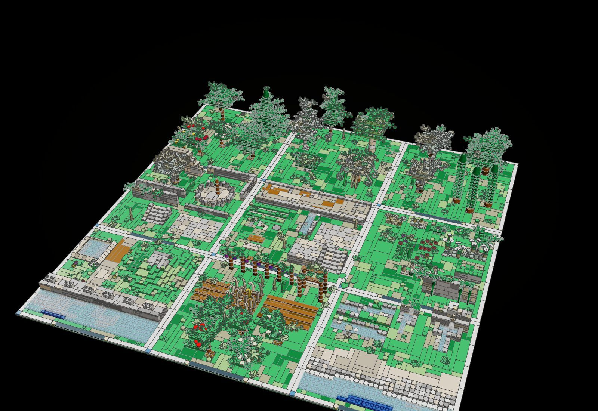
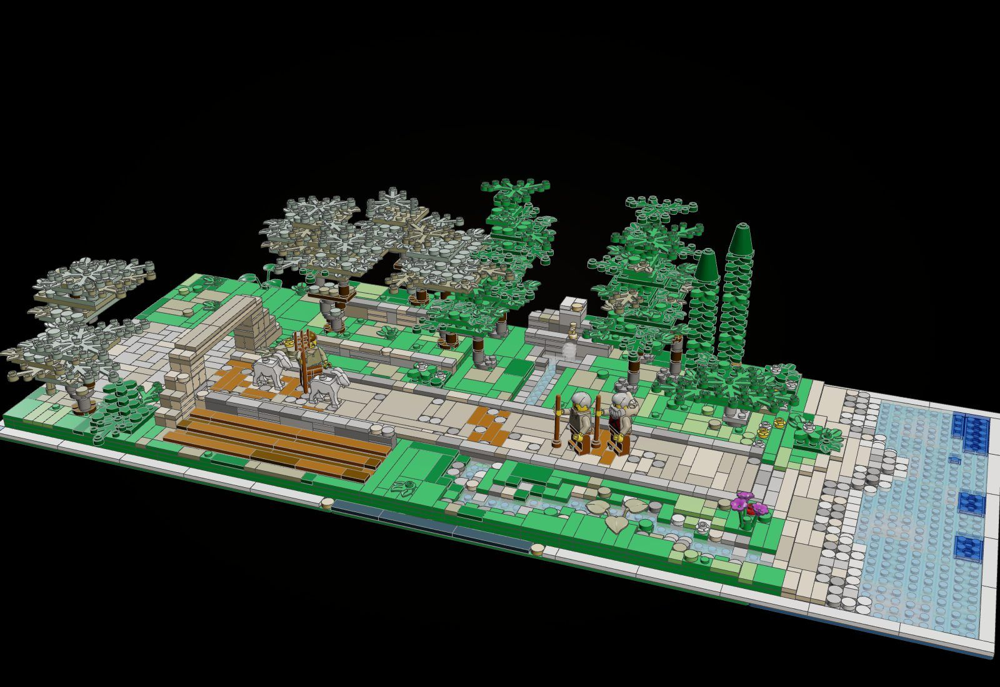
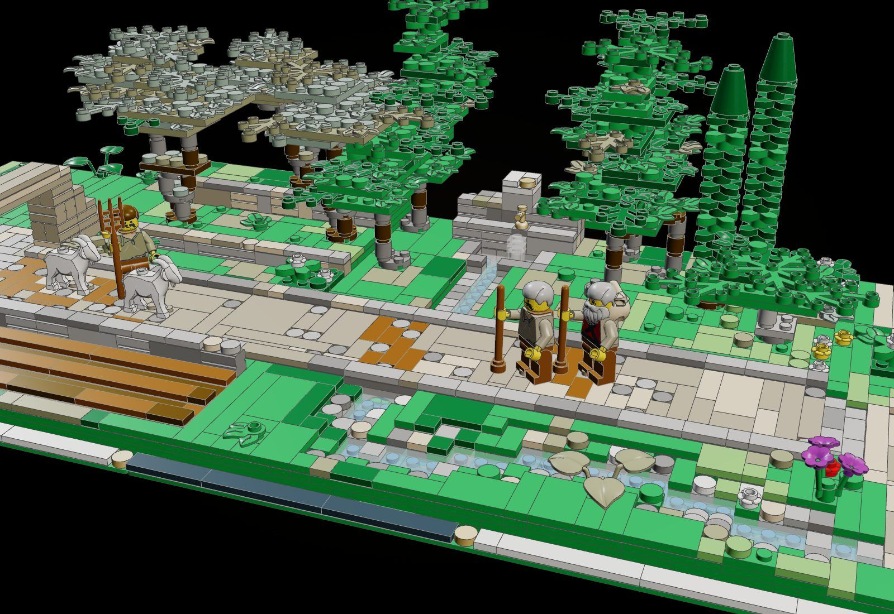
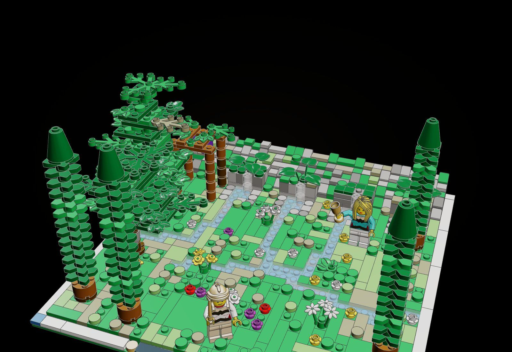
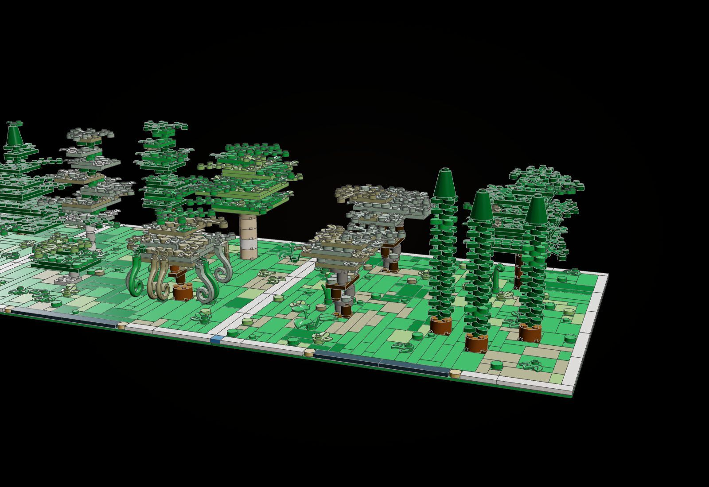
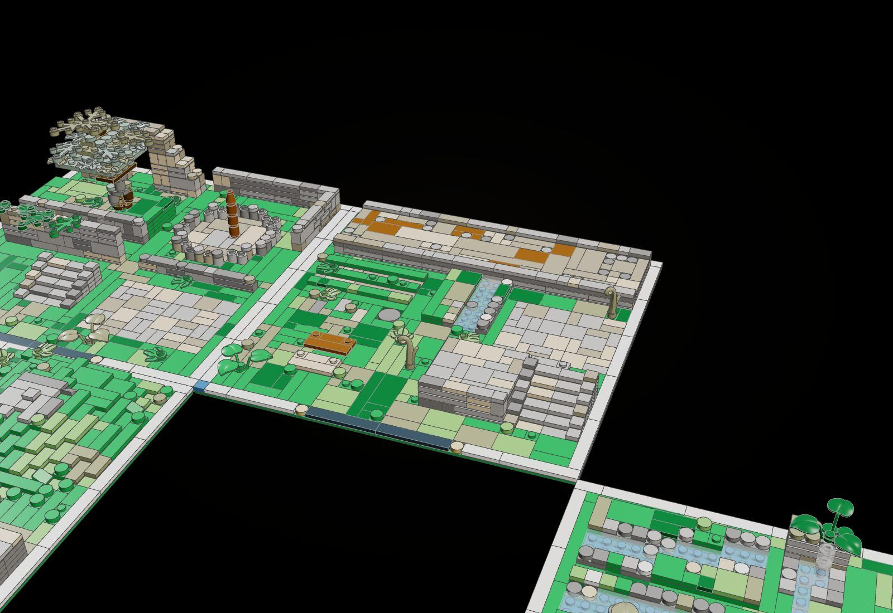
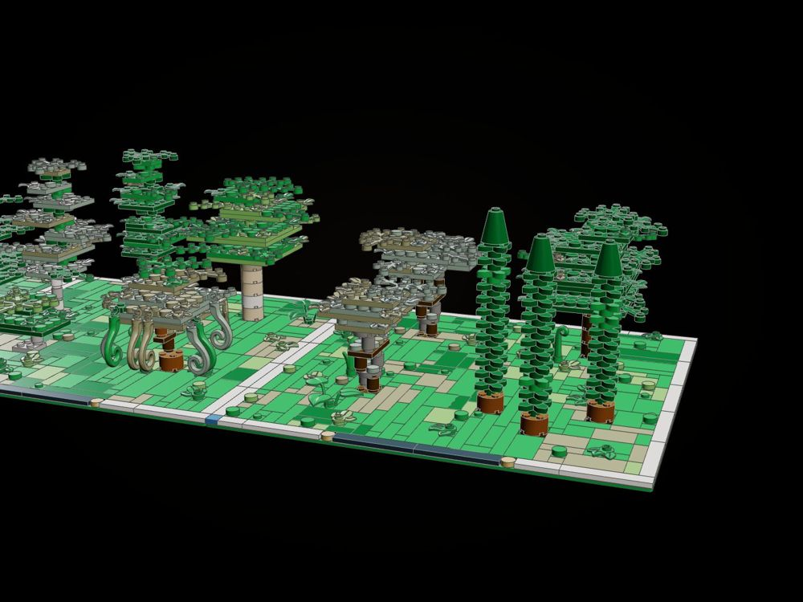
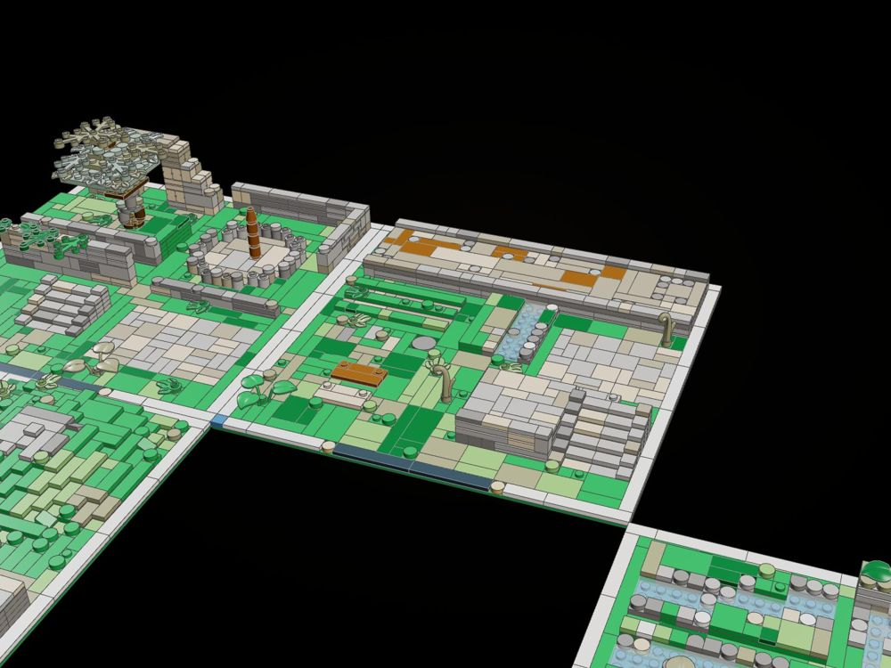
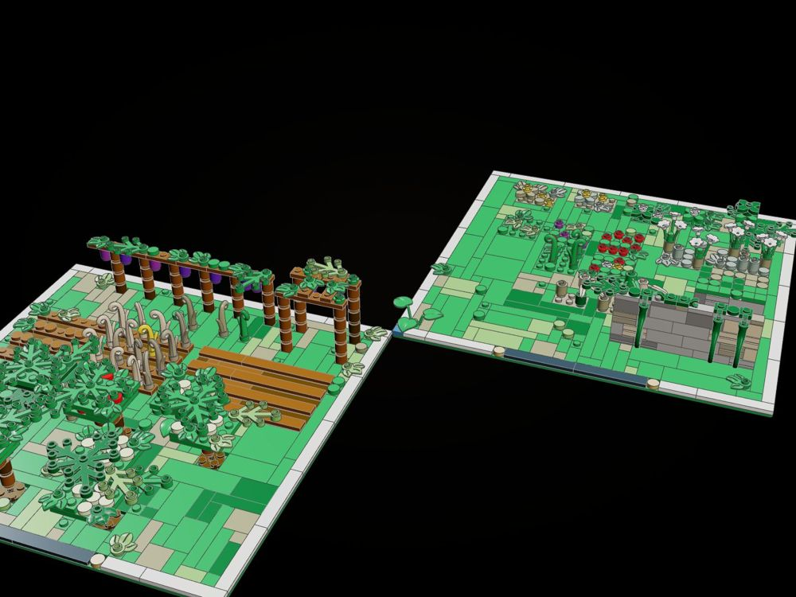

The Landscape Library
Not one moment but the ground every moment stands on: the trees, plants, roads, walls, water and finished ground of Homer's Mediterranean, as seeded, grid-true LEGO builders that every kit and film set of the Odyssey line can call.
"And round about the cave grew a luxuriant wood, alder and poplar and sweet-smelling cypress ... and round about soft meadows of violets and parsley were blooming." (Odyssey V.63-73, tr. A. T. Murray)

The object
The library itself, tools/forage/product/landscape.py: forty-odd builders that each return rows, the stud squares they stand on and the squares their crowns shade, varied by a seed, checked by kitlib.check, with ground() to finish a baseplate from a type and height map.





How it is built
- olive: 63-102 pieces over four seeds, 0 not clicked, 0 in the same space (Od. XIII.102, XXIII.190)
- cypress: 13-16 pieces over four seeds, 0 not clicked, 0 in the same space (Od. V.64)
- oak: 140-160 pieces over four seeds, 0 not clicked, 0 in the same space (Od. XIV.327, XIX.296)
- plane: 105-116 pieces over four seeds, 0 not clicked, 0 in the same space (Il. II.307)
- poplar: 63-73 pieces over four seeds, 0 not clicked, 0 in the same space (Od. VII.106, X.510, XVII.208)
- poplar white: 63-73 pieces over four seeds, 0 not clicked, 0 in the same space (Od. VII.106 (leuke))
- fig: 22-33 pieces over four seeds, 0 not clicked, 0 in the same space (Od. VII.116, XI.590, XII.103, XXIV.341)
- willow: 82-97 pieces over four seeds, 0 not clicked, 0 in the same space (Od. X.510)
- alder: 58-65 pieces over four seeds, 0 not clicked, 0 in the same space (Od. V.64, V.239)
- fir: 127-131 pieces over four seeds, 0 not clicked, 0 in the same space (Od. V.239)
- stone pine: 73-84 pieces over four seeds, 0 not clicked, 0 in the same space ((Mediterranean shore))
- fruit tree pear: 24-29 pieces over four seeds, 0 not clicked, 0 in the same space (Od. VII.115, XXIV.340)
- fruit tree apple: 24-29 pieces over four seeds, 0 not clicked, 0 in the same space (Od. VII.115, XXIV.340)
- laurel: 8-12 pieces over four seeds, 0 not clicked, 0 in the same space (Od. IX.183)
- myrtle: 7-7 pieces over four seeds, 0 not clicked, 0 in the same space ((the maquis of the coasts))
- maquis: 8-9 pieces over four seeds, 0 not clicked, 0 in the same space ((the scrub of the hills))
- reeds: 4-7 pieces over four seeds, 0 not clicked, 0 in the same space (Od. XIV.474)
- asphodel: 13-17 pieces over four seeds, 0 not clicked, 0 in the same space (Od. XI.539, XXIV.13)
- flowers poppy: 8-17 pieces over four seeds, 0 not clicked, 0 in the same space ((wild flowers))
- flowers violet: 9-17 pieces over four seeds, 0 not clicked, 0 in the same space (Od. V.72)
- flowers parsley: 6-17 pieces over four seeds, 0 not clicked, 0 in the same space (Od. V.72)
- flowers wild: 9-17 pieces over four seeds, 0 not clicked, 0 in the same space ((wild flowers))
- flowers grass: 8-15 pieces over four seeds, 0 not clicked, 0 in the same space ((grass tufts))
- moss: 10-12 pieces over four seeds, 0 not clicked, 0 in the same space ((stone))
- ivy wall: 47-59 pieces over four seeds, 0 not clicked, 0 in the same space (Od. XVII.266)
- drystone: 21-28 pieces over four seeds, 0 not clicked, 0 in the same space (Od. XVIII.359, XXIV.224)
- terrace: 63-89 pieces over four seeds, 0 not clicked, 0 in the same space ((the terraced hillsides))
- road: 127-140 pieces over four seeds, 0 not clicked, 0 in the same space (Od. III.478-497)
- cart track: 72-78 pieces over four seeds, 0 not clicked, 0 in the same space (Od. VI.37-110, XV.190)
- footpath: 43-48 pieces over four seeds, 0 not clicked, 0 in the same space (Od. XIV.1, XVII.204)
- paving: 159-174 pieces over four seeds, 0 not clicked, 0 in the same space (Od. XVII.264-8)
- stair: 73-73 pieces over four seeds, 0 not clicked, 0 in the same space (Od. I.330, XXIII.85)
- threshold: 5-5 pieces over four seeds, 0 not clicked, 0 in the same space (Od. XVII.339, XXI.43, XX.258)
- threshing floor: 57-66 pieces over four seeds, 0 not clicked, 0 in the same space (Il. V.499, XX.495)
- gate: 62-65 pieces over four seeds, 0 not clicked, 0 in the same space (Od. VI.262-9, XVII)
- fountain: 89-93 pieces over four seeds, 0 not clicked, 0 in the same space (Od. XVII.205-211)
- spring: 36-38 pieces over four seeds, 0 not clicked, 0 in the same space (Od. V.70, IX.140, XIII.109)
- stream: 196-219 pieces over four seeds, 0 not clicked, 0 in the same space (Od. V.441, VI.85)
- beach: 326-345 pieces over four seeds, 0 not clicked, 0 in the same space (Od. V.151, VI.94, XIII.116)
- quay: 138-151 pieces over four seeds, 0 not clicked, 0 in the same space (Od. VI.263-7, XIII.96)
- pergola: 32-33 pieces over four seeds, 0 not clicked, 0 in the same space (Od. V.69, VII.121)
- vine row: 52-55 pieces over four seeds, 0 not clicked, 0 in the same space (Od. XXIV.342, Il. XVIII.561)
- field: 49-61 pieces over four seeds, 0 not clicked, 0 in the same space (Od. XVIII.366-375)
- field grain: 94-104 pieces over four seeds, 0 not clicked, 0 in the same space (Od. XVIII.366-375)
- orchard: 191-208 pieces over four seeds, 0 not clicked, 0 in the same space (Od. XXIV.336-344)
- ground: 107-122 pieces over four seeds, 0 not clicked, 0 in the same space ((terrain))
The builds inside the build

The trees (plates A-C)
Every tree builder, several seeds of the olive and the cypress, the fruit trees.

Roads, walls, water and ground (plates E, F, G, I)
The built road with its culvert, the fountain, springs, streams, beach, quay, walls, floors and the terrain helper.

Shrubs, flowers and cultivation (plates D and H)
Laurel, myrtle, maquis, asphodel, flower patches, reeds, moss, ivy; pergola, vines, fields, orchard.
What the checker says
| Build | File | Pieces | Loose | Clashes |
|---|---|---|---|---|
| The sampler: every builder on nine framed baseplates | set.landscape-sampler | 5,438 | 0 | 0 |
| The road to Ithaca town (Od. XVII) | set.landscape-ithaca-road | 2,385 | 0 | 0 |
| Calypso's grove (Od. V) | set.landscape-grove | 1,414 | 0 | 0 |
| Sampler plates A-C: the trees | set.landscape-trees | 1,962 | 0 | 0 |
| Sampler plates E, F, G, I: roads, walls, water, terrain | set.landscape-ground | 2,456 | 0 | 0 |
| Sampler plates D and H: shrubs, flowers, cultivation | set.landscape-plants | 1,020 | 0 | 0 |
Still to do
- Crowns are stacks of flat tiers: they read as LEGO trees but not as a silhouette with drooping or upswept boughs.
- The sampler (5,438 pieces) takes odyssey-forage.html longer than its 90-second parse limit in this container, so its hero was rendered by a scratch copy of look.js that serves a copy of the page with a longer limit (the shared files are unchanged).
- Roads run straight along x (turn() gives z); there is no curve or junction piece, and no ramp between heights.
- Water on a green baseplate needs two plates of rise (one blue plate under the clear tile).
- No palm (Delos, Od. VI.163), no cornel or wild-olive thicket builder yet; the town gate is plain.